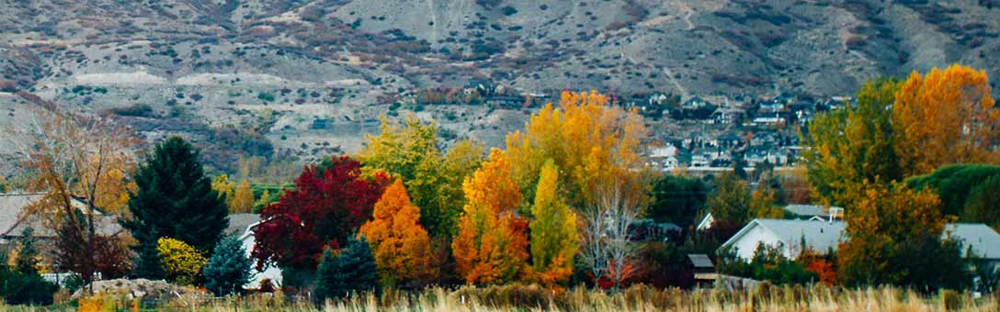

Town Information
Royality to visit Idaho this Thanksgiving
The Snow Queen is making an appearance this Thanksgiving, and you're in a front-row seat my darlings! She'll be coming round with a dusting of snow, perhaps a few inches if you do something nice for her. If you happen to hear the ringing of sleighbells or tinkling laughter whilst giving thanks around your table, take a look outside and you may be surprised to find someone looking back. But! If you don't get the chance to look into the queen's icy eyes, at least appreciate her delicate frost patterns and crisp snow scuffings. She may just give you an even better gift come Christmas.